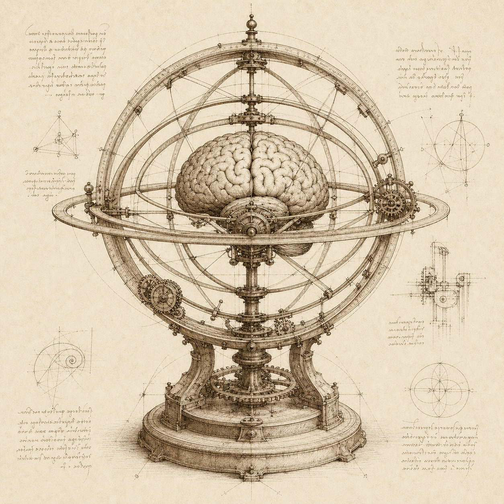

Context with meaning.
Constraints, decisions, facts, and conventions. Typed memory gives every thought a purpose, an authority, and a place in the next context packet.
Explore typed memory
Great work begins with what we remember.
Give your agents a place to think, a system to act,
and a record of how they got there.
Local-first. Built in Rust. In active exploration.

fig. I — apparatus of memory Every thought leaves a trace.I. THE PHILOSOPHY
A new session shouldn’t mean a blank page. Engram holds the constraints, decisions, and evidence that let the next agent carry the work forward.
Constraints, decisions, facts, and conventions. Typed memory gives every thought a purpose, an authority, and a place in the next context packet.
Explore typed memoryTurn a goal into bounded work. Dependencies shape what’s ready; fenced claims make ownership explicit. Every agent knows where to begin.
Understand local workCapture a finding once. Carry it into handoffs and evidence-backed completion. Immutable history preserves the path, not just the destination.
Follow the evidenceII. THE MECHANISM
A small vocabulary for a complete working loop. The next step, the remembered constraint, the evidence of progress—all in one local notebook.
engram work next
Your next piece of work is ready. Improve the search experience Acceptance: relevant results come first Remembered constraint Keep the search index on the local host.
Find what you hold, what is ready, and what changed. Start with the context that matters.
III. FIELD NOTES
Engram is an evolving alpha. Explore what works today, the boundaries of its trust model, and the ideas still taking shape.
IV. YOUR FIRST PAGE
Start with a local, advisory notebook. Build the alpha from source with Rust, then initialize Engram inside your project.
Read the host setup guide# 01 — Build from source (Rust required)
git clone https://github.com/grlap/Engram.git
cd Engram
cargo install --path .
# 02 — Open a local advisory notebook
export ENGRAM_HOME="$HOME/.engram"
engram init --required-assurance advisory \
--authorized-by "$USER" --reason "Local advisory setup"
engram work nextFor another project, run the initialization commands from that project’s directory. Your host sets session identity for agent use.